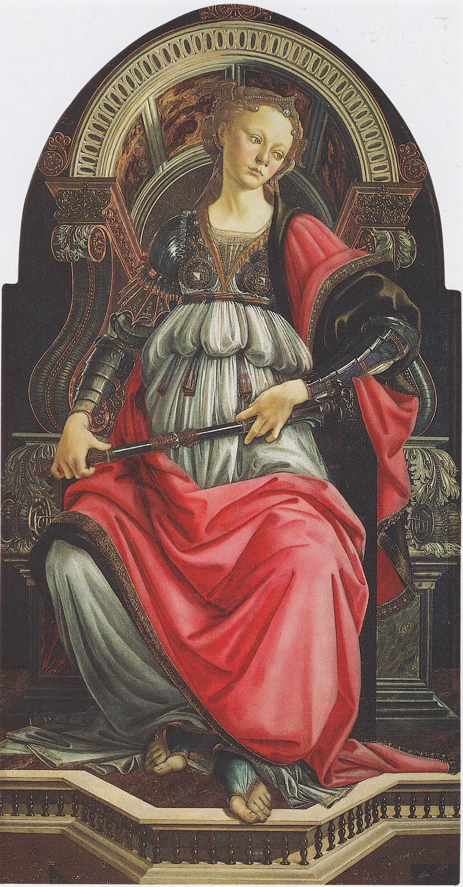
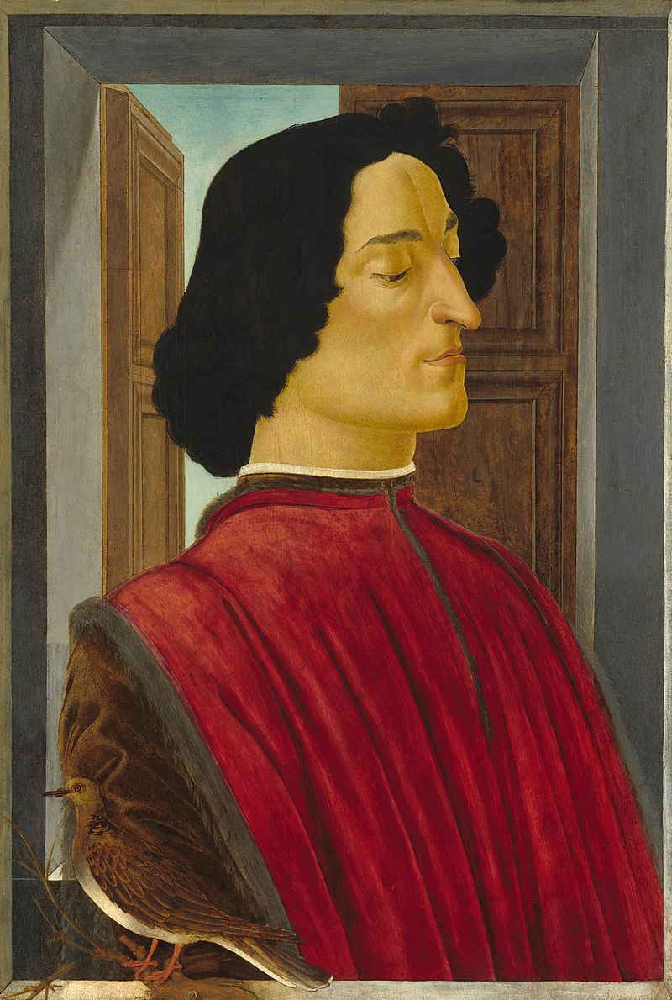
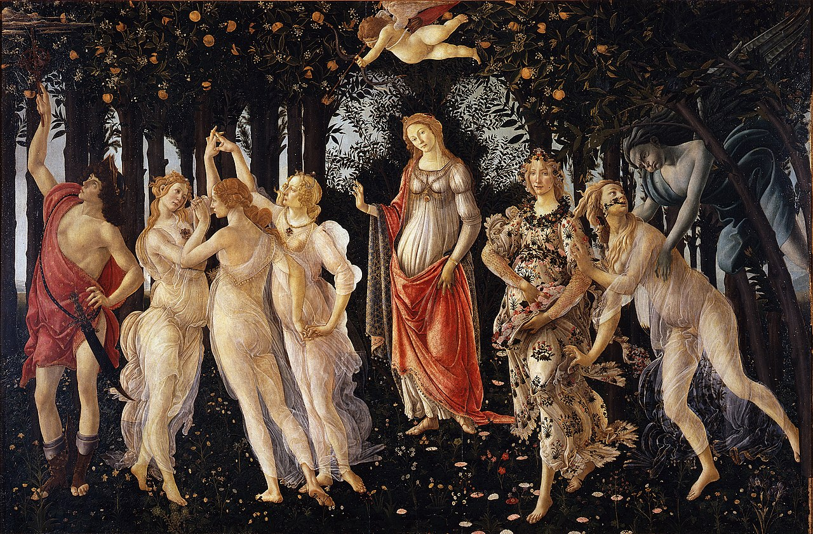
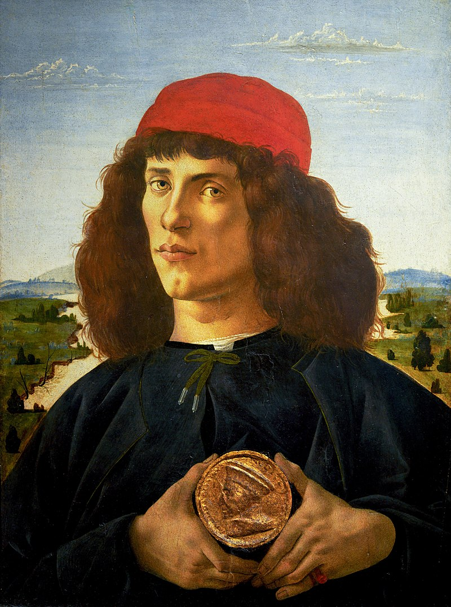
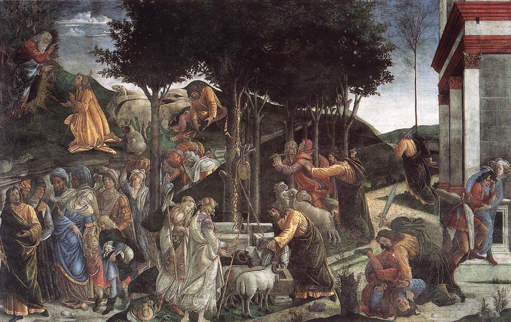
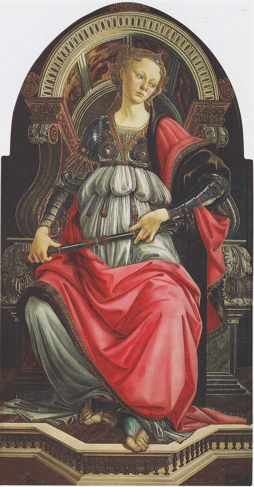
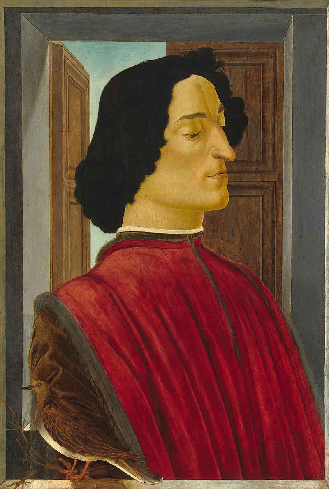
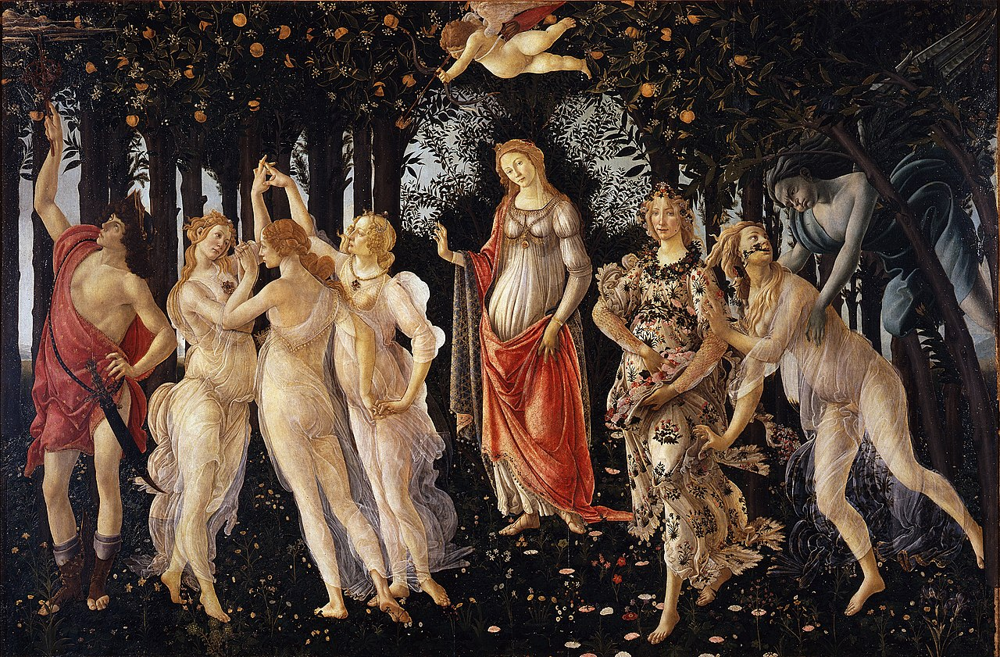
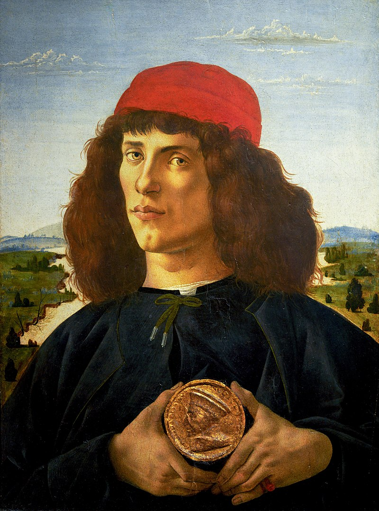
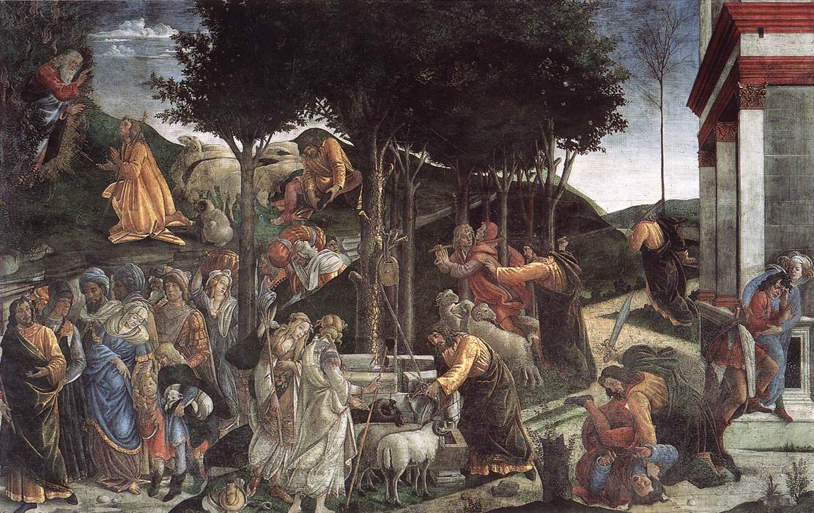

Botticelli
Alessandro di Mariano di Vanni Filipepi, conosciuto col nome d'arte di Sandro Botticelli (Firenze, 1º marzo 1445 – Firenze, 17 maggio 1510), è stato un pittore italiano inquadrabile nella corrente artistica del Rinascimento. In un'età dell'oro per il mondo dell'arte, il pittore ebbe una formazione di scuola fiorentina sotto Filippo Lippi e con il patronato della famiglia Medici, riuscendo a sviluppare uno stile elegante che proponeva un nuovo modello di bellezza ideale e che incarnava i gusti e la raffinatezza della società dell'epoca. La sua arte subì anche l'influenza di Andrea del Verrocchio e dei fratelli Antonio e Piero del Pollaiolo. Eccellente ritrattista, Botticelli fu un autore poliedrico e il suo corpus spazia dai soggetti di carattere mitologico-allegorico ai soggetti di carattere religioso. La sua fama oggi è legata soprattutto alle opere mitologiche, delle quali sono emblema due dipinti in particolare: questi sono due grandi tele custodite entrambe agli Uffizi di Firenze e sono la Nascita di Venere e la Primavera, che sono oggi tra i dipinti più famosi al mondo, tanto da essere considerate due icone del Rinascimento italiano e dell'arte occidentale, grazie anche ai profondi significati filosofici e letterari riscontrabili in esse. Mentre per quanto riguarda l'altro caposaldo dell'arte botticelliana, la produzione sacra, degna di nota è la cospicua produzione di Madonne col Bambino, realizzate preferibilmente in tondo e per le quali lui e la sua bottega divennero celebri; ma l'apice di questo genere è certamente rappresentato dai grandi affreschi realizzati per la Cappella Sistina a Roma. Tuttavia, nell'ultima parte della sua vita, l'arte e lo spirito di Botticelli subirono una crisi che culminò in un esasperato misticismo, anche per via dell'influenza del Savonarola. Così, oltre all'unico vero erede Filippino Lippi, suo allievo e collaboratore, dopo la morte di Botticelli la sua reputazione fu eclissata profondamente e i suoi dipinti rimasero quasi dimenticati nelle chiese e nei palazzi per i quali erano stati creati, così come i suoi affreschi nella Sistina che furono messi in ombra da quelli straordinari di Michelangelo. Il lungo abbandono ebbe fine a partire dal XIX secolo, venendo riscoperto dalla storiografia artistica anche grazie e soprattutto all'influenza che ebbe sui Preraffaelliti. Maestro del sacro e del profano, è stato descritto come un outsider nella corrente principale della pittura italiana, avendo egli un interesse limitato per molti degli aspetti associati alla pittura del Quattrocento, come l'ispirazione diretta all'arte classica e la rappresentazione realistica di anatomia umana, prospettiva e paesaggio. Infatti, la sua formazione gli ha permesso di rappresentare questi aspetti della pittura, senza però lasciarsi omologare dallo scenario contemporaneo.
 








